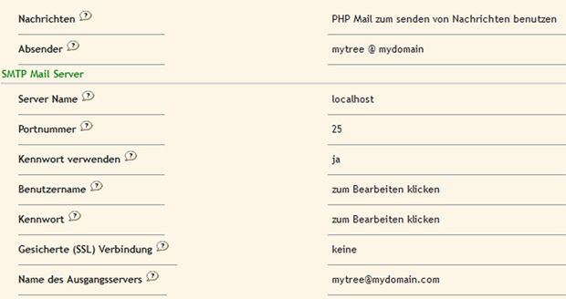

Häufig gestellte Fragen
Inhaltsverzeichnis
Installation
- Ich erhalte die Fehlermeldung, dass webtrees die Datei includes/db_schema/db_schema_0_1.php nicht finden kann
- Sie versuchen, webtrees in eine Datenbank zu installieren, die bereits eine leere Tabelle site_setting enthält. Dies kann passieren, wenn eine vorherige Installation fehlgeschlagen ist. Das Setup-Skript muss sowohl Tabellen erstellen, als auch einige Startwerte einfügen. Löschen Sie Ihre Datenbank/Tabellen und Ihre Datei data/config.ini.php und versuchen Sie es erneut.
- Ich bekomme die Fehlermeldung Uncaught exception 'Zend_Cache_Exception' with message 'Could not determine temp directory'
- Wahrscheinlich haben Sie kein Schreibrecht auf den temp-Ordner auf Ihrem Server. Setzen Sie die Rechte für den Ordner data/ auf beschreibbar. webtrees wird dann versuchen, diesen Ordner zu verwenden.
- Ich bekomme nur eine leere Seite
- Versuchen Sie /setup.php zur Adresse hinzuzufügen. Wahrscheinlich gibt es ein Problem bei der Server-Konfiguration, das webtrees daran hindert, auf das Setup-Skript weiterzuleiten, das Ihnen weitere Informationen geben sollte. Andererseits könnte Ihr Server so konfiguriert sein, keine Fehler anzuzeigen. In diesem Fall überprüfen Sie Ihr Server-PHP Fehlerprotokoll.
- Die Seiten für Personendaten sind leer, aber andere Seiten sind OK
- Wenn Sie Ihre Javascript Fehlerprotokolle überprüfen, werden Sie in der Regel eine Meldung finden wie "TypeError: jQuery.cookie is not a function". Dies zeigt, dass der Server über sehr alte Konfigurationsdateien für mod_security verfügt. Die mod_security Gruppe hat dieses Problem im Jahr 2010 behoben. Siehe: https://modsecurity.org/tracker/browse/CORERULES-29. Die beste Lösung ist einfach mod_security zu aktualisieren (oder lassen Sie Ihren Web-Host die Aktualisierung vornehmen). Falls dies nicht möglich ist, müssen Sie die Datei .../js/jquery.cookie-1.4.1.js unter einem neuen Namen abspeichern. Vielleicht "jquery.iekooc-1.4.1.js". Sie müssen dann die Datei includes/session.php bearbeiten und den Dateinamen aktualisieren, wo immer er erscheint.
Daten von PhpGedView importieren
- Briefe mit Akzenten wurden beschädigt, aus é wurde é, aus è wurde è, und so weiter
- Siehe den Beitrag im Forum für einen bekannten Fehler in phpGedView. Sie sollten die Daten mit dem Add-On für PhpGedView bearbeiten und dann erneut importieren.
- Nach dem Import kann ich mich mit meinem Admin-Konto nicht anmelden
- Der Import-Prozess ersetzt alle Daten mit denen aus PhpGedView - einschließlich der Benutzerkonten. Nach dem Import müssen Sie sich mit Ihrem PhpGedView-Benutzernamen und Passwort anmelden.
- Eingebettetes HTML erscheint nicht mehr bearbeitet vor der Anzeige
- In phpGedView hatte eingebetteter HTML-Code die Merkmal-Trennzeichen '<' und '>' codiert als < und > bzw. bevor er in den Datenbank-Tabellen gespeichert wurde. webtrees behält die Merkmal-Trennzeichen bei, wie sie sind. Bis das Konvertierungs-Werkzeug diese Änderung beherrscht, (a) verwenden Sie entweder webtrees, um eingebettetes HTML zu bearbeiten und die codierten Merkmal-Trennzeichen wiederherzustellen oder (b) ersetzen Sie in der zugehörigen Datenbank die codierten Merkmal-Trennzeichen mit den ursprünglichen Zeichen. Der zweite Weg kann vermeiden, die Datumsstempel zu Objekten wie Neuigkeiten zu ändern, und global mit einem Tool wie phpMyAdmin durchgeführt werden.
- Wie wird der Übertragungs-Assistent erneut ausgeführt
- Der Transfer-Assistent sollte nur einmal ausgeführt werden und deshalb wird der Link nicht mehr angezeigt, sobald er einmal abgeschlossen ist. Aber wenn etwas schief geht und Sie müssen ihn noch einmal laufen lassen, ist das möglich. Der Link wird nur angezeigt, wenn Sie keine Stammbäume und nur einen Benutzer in webtrees haben. Dies soll verhindern, dass Sie versehentlich Ihre Daten überschreiben. Also löschen Sie Ihre Bäume und Nutzer (abgesehen von Ihrem eigenen admin-Benutzerkonto) und die Option wird erneut angezeigt.
Konfiguration
- Wie entferne ich Einträge aus der Liste der verfügbaren Sprachen?
- Löschen Sie die entsprechende Sprachdatei (??.mo) aus dem Sprach-Ordner. Achten Sie darauf, mindestens eine Sprache installiert zu lassen. Stellen Sie sicher, dass keiner Ihrer Benutzer oder Stammbäume die entfernte Sprache ausgewählt haben.
- Wie füge ich Übersetzungen für andere Sprachen hinzu?
- Einige zusätzliche Sprachdateien gibt es im Verzeichnis /languages/extra. Diese sind entweder sehr unvollständig oder einer Standard-Sprache sehr ähnlich (z.B. fr_CA oder en_AU). Kopieren Sie die .MO-Dateien in den Sprach-Ordner.
- Nach dem Import meines Stammbaums ist zwischen Nachnamen und Vornamen kein Leerzeichen.
- Es gibt keine Leerzeichen, weil Ihre Stammbaum-Datei kein Leerzeichen enthält. Einige Namen (typischerweise ostasiatische Namen) haben keine Leerzeichen zwischen Vor- und Nachnamen, also wäre es aus Sicht von webtrees falsch, automatisch welche hinzufügen. Und es gibt viele Desktop-Anwendungen, die Leerzeichen auslassen. In webtrees gibt es jedoch ein eingebautes Dienstprogramm, um sie einzufügen. Verwaltung -> Aktualisierung per Stapelverarbeitung -> Schräg- und Leerzeichen in Namen korrigieren - und folgen Sie den Anweisungen.
GEDCOM Prüfung
- Ist das GEDCOM Prüfungs-Modul aus PGV in webtrees verfügbar?
- Nein. Aber auf der Seite Verwaltung unter Stammbäume gibt es die Option ‘Fehlersuche’. Hier wird nach Strukturproblemen in den Daten gesucht wie z.B. ungültige Links oder fehlende Datensätze.
Wie kann ich GEDCOM IDs (XREFs) in webtrees anzeigen?
Nur (sehr) wenige Anwendungen, wie PhpGedView, zeigen die XREF in Klammern hinter dem Namen. webtrees macht das nicht. Dies ist eine bewusste Design-Entscheidung, wie bei den "meisten" anderen Software-Produkten für Familiengeschichte auch.
- XREFs sind 20 Zeichen Felder. Wir müssten jede Seite mit genügend Platz für "(I1234567890123456789)" nach dem Namen ausstatten. Dies würde das Seitenlayout unnötigen Beschränkungen unterwerfen.
- XREFs sind nicht eindeutig. Wenn Sie 3 Stammbäume auf Ihrer Website haben, haben Sie auch 3 "I1" Datensätze.
- XREFs sind in lateinischen Buchstaben geschrieben und viele Sprachen verwenden nicht das lateinische Alphabet. Es verursacht auch Layout-Probleme mit Rechts-nach-links-Sprachen.
- Wir wollen weg von GEDCOM für die interne Datenspeicherung und müssen daher die Verbindung mit GEDCOM Kennungen aufheben.
Es gibt noch ein paar Admin-Bearbeitungs Dialoge, wo XREFs verwendet werden. Diese müssen noch aktualisiert werden. Bis dahin können Sie die XREF aus der URL der Personen-Seite herauslesen.
Sonderzeichen in Ordner- und Datei-Namen
Dieser Beitrag bezieht sich auf die Forum Diskussion: http://webtrees.net/en/forums/23-help-for-ver-12-latest-release/15885-special-characters-in-multimedia-file-names und den Fehler-Report: https://bugs.launchpad.net/webtrees/+bug/596472
Das Thema wurde beschrieben von:
If I add a new multimedia file name in an existing folder "Agostinho Teixeira Estrêla", webtrees creates another folder "Agostinho Teixeira Estrêla" (the special character its wrong) but inserts the multimedia file in the correct folder.
und von:
If the directory or file name has accents or characters like (àéèùçâïâ ... as in french) the media reports "file name found" however the thumbnail is displayed, MediaViewer displays also the file.
Nach vorsichtiger Untersuchung scheint das Problem bei Windows-Versionen von PHP aufzutreten.
Nach folgendem Fehlerbericht, kann es nicht in PHP5 behoben werden, in PHP6 wird es aber behoben sein: https://bugs.php.net/bug.php?id=46990
Wenn wir unter Windows einen Dateinamen schreiben, müssen wir davon ausgehen, dass es ISO-8859-XXX ist. Wenn wir unter Windows einen Dateinamen lesen, denke ich, dass PHP versucht, ihn zu ISO-8859-1 (?) zu konvertieren, aber wir können nicht wissen, ob es nur versucht hat oder auch erfolgreich war. Einige Workarounds scheinen verfügbar zu sein, aber sie werden nur für die kleine Untergruppe von UTF* Zeichen funktionieren, die auch in ISO-8859-1 existieren.
Leider sind wir deshalb nicht in der Lage, dies innerhalb von webtrees zu beheben. Wenn Sie nicht-ASCII-Dateinamen verwenden wollen, dann wählen Sie Linux oder MacOS.
Forum Profil und Signatur
Die Informationen Ihres Forum-Profils, einschließlich Ihrer Signatur, sind ein sehr wichtiger Teil bei der Beteiligung an unserem Forum. Die webtrees Hilfegruppe kann diese Informationen benutzen, um Ihre Konfiguration zu vergleichen, aus früheren Support-Anfragen zu lernen und Ihre Website besuchen, um Probleme persönlich zu überprüfen. Selbst wenn Ihre Website "gesperrt" und für Zufallsbesucher nicht verfügbar ist (Login erforderlich), können wir wichtige Eigenschaften aus dem Zugriff auf Ihre Webseite erkennen. Bitte betrachten Sie unseren Wunsch nach dieser Informationen nicht als überflüssig. Es ist in der Tat ein wichtiger Teil unserer Möglichkeiten, Ihre Fragen zu bearbeiten. Weitere detaillierte Erläuterungen aller Forum-Optionen finden Sie auf der Registerkarte 'Forum Help' unter webtrees Hilfe.
Wie Sie Ihre Forum Signatur einrichten oder ändern
Im webtrees Forum klicken Sie einfach auf die Registerkarte Profil oder Ihren Benutzernamen, wo immer er angezeigt wird. Sie erhalten einen blauen Balken mit der linksbündigen Aufschrift "Profile for YOUR-USER-NAME" und rechtsbündig eine rote "EDIT"-Schaltfläche.
{kind=link}
Klicken Sie auf EDIT und Sie erhalten die Anzeige unten mit mehreren Registerkarten.
- Geben Sie Ihre Benutzer-Informationen auf der ersten Registerkarte ein.
- Ihr Feld Benutzername ist wahrscheinlich schon durch Ihre Anmeldung ausgefüllt, wie Ihr richtiger Name und email-Adresse. Prüfen Sie Ihre globalen Einstellungen.
- Geben Sie Ihre Benutzer-Profil-Informationen auf der zweiten Registerkarte ein. Dies beinhaltet die Forum Signatur.
{kind=link}
- Ein Großteil dieser Informationen ist nicht erforderlich, aber sehr willkommen. Geben Sie hier Ihren persönlichen Text, Geburtsdatum (oder einen Teil davon), Standort, Geschlecht, Ihre webtrees Webseiten Adresse (nur Domain und Unterordner) und alle anderen Social-Media-Links, die Sie anzeigen wollen, ein. Das wichtigste Feld auf dieser Registerkarte ist Signature. Bitte geben Sie Ihre bevorzugte Anrede und Informationen zu Ihrer System-Hardware und Software, einschließlich Versionen, sowie Ihre aktuelle webtrees Version, ein. Der Name Ihres Internet-Service-Providers (ISP) ist nicht unbedingt nötig und falls Sie ihn eingeben, bitte nicht mit einem HTML-Link, das würde als kostenlose Werbung für Ihren Provider betrachtet werden und steht im Gegensatz zu unserer Politik im Forum. Sie sollten jedoch Ihre vollständige öffentliche Adresse für Ihre webtrees Webseite hier angeben, unabhängig davon, ob öffentlich oder nicht, da es uns einen schnellen Verweis für die Betrachtung Ihrer Live-Web-Seite liefert. Selbst wenn Sie webtrees nur in einem lokalen Netzwerk betreiben und keine Adresse liefern können, ergänzen Sie bitte zumindest Ihre Software-Typen und Versionen. Und speichern Sie mit der Schaltfläche Save.
{kind=link}
- Auf der dritten Registerkarte wählen Sie ein Avatar oder laden Ihr eigenes hoch.
- Wenn Sie Ihr eigenes Bild benutzen wollen, können Sie ein Bild bis 250 x 250 Pixel und 50 Kilobyte hochladen. Das Forum wird das Bild automatisch für die Anzeige an verschiedenen Orten skalieren. Wir empfehlen eine quadratische Größe, denn dies ist das Format, das an den meisten Orten angezeigt wird. Ein nicht-quadratisches Bild wird vielleicht verzerrt.
- Auf der vierten Registerkarte stellen Sie Ihre bevorzugten Forum-Einstellungen ein.
E-Mail-Einstellungen
Es gibt in webtrees drei Stellen, an denen ein Administrator E-Mail-Einstellungen vornehmen sollte, um das webmail System richtig arbeiten zu lassen; auf WEBSEITEN-Ebene, auf STAMMBAUM-Ebene und auf Ebene des ADMINISTRATOR-Kontos.
- Verwaltung -> Site-Einstellungen -> Register "Mail-Konfiguration"
Klicken Sie bitte auf die Fragezeichen-Symbole, um ein Fenster zur Anzeige der Hilfetexte zu öffnen, wie "die Felder auszufüllen sind" und wie die "webtrees-noreply" Einträge mit IHRER GÜLTIGEN E-Mail-Adresse (oder Ihrem Domainen-Namen) ersetzt werden.
- Verwaltung -> Stammbäume -> Ihr Stammbaum -> Register "Allgemeines" -> Sektion "Kontakt Information"
Ändern Sie auch hier den Standard-Eintrag "webtrees-noreply" durch IHRE GÜLTIGE E-Mail-Adresse.
- Verwaltung -> Benutzer -> Ihr Benutzername -> E-Mail-Feld UND "Bevorzugte Kontaktaufnahme" einstellen
Das ist ein Beispiel für den PHP E-Mail-Dienst: 
{kind=link}
{kind=link}
{kind=link}